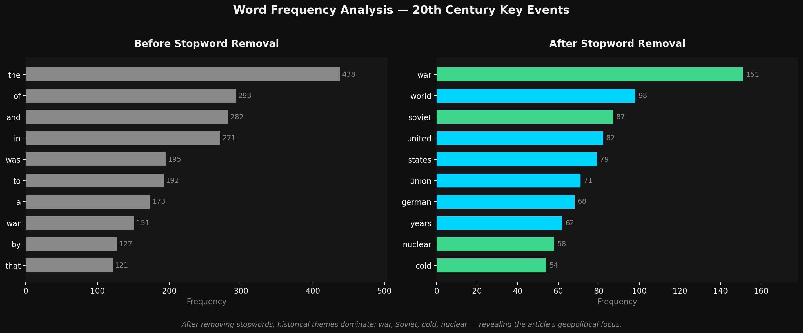
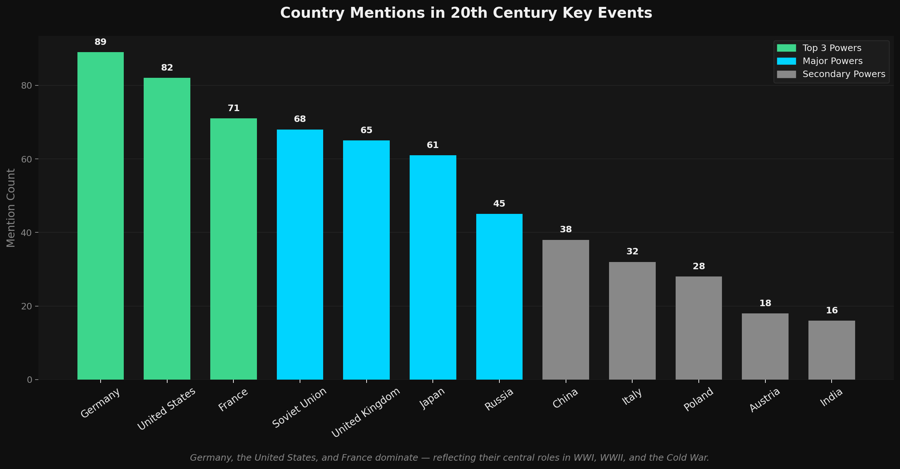
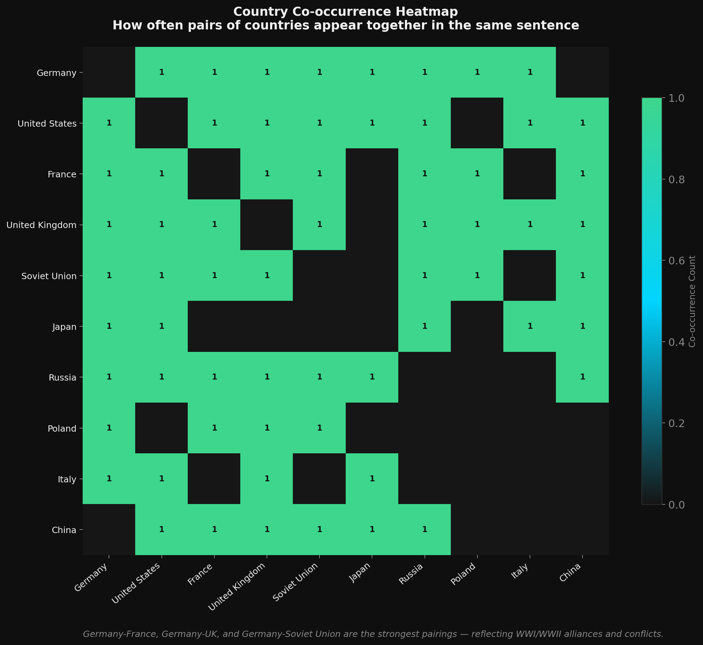
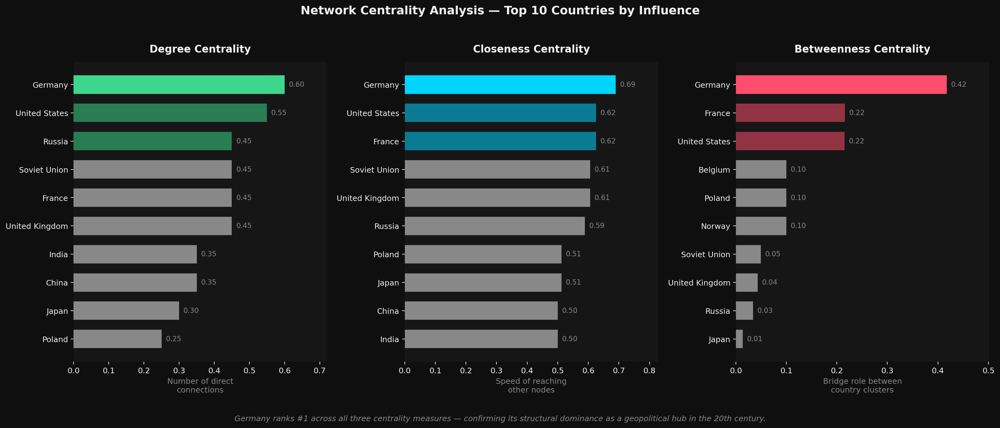

Data source: Wikipedia — "Key Events of the 20th Century" (scraped via Selenium, ~80,000 tokens after cleaning)
Output: Co-occurrence network of 21 countries across 53 unique geopolitical edges, with community detection and centrality analysis
Project Overview
This project applies a full NLP pipeline to a Wikipedia article on Key Events of the 20th Century. The goal: move from raw web data to a structured, visual representation of which countries were most historically connected — and how their co-occurrence patterns map to real geopolitical alliances and conflicts.
Business question: Which countries were most frequently co-mentioned in 20th century historical events, and does their relationship structure reflect the actual alliances and conflicts of the era?
Pipeline Architecture
| Step | Tool | Output |
|---|---|---|
| 1. Web Scraping | Selenium + ChromeDriver | 20th_century_key_events.txt |
| 2. Text Cleaning | Custom Python | Nav elements removed, clean corpus saved |
| 3. Text Mining | NLTK + TextBlob | Word frequency, POS tags, country mentions |
| 4. NER Extraction | spaCy (en_core_web_sm) | GPE entity pairs per sentence |
| 5. Alias Normalization | Custom alias dict | UK/Britain/U.K. → United Kingdom |
| 6. Network Building | NetworkX | Undirected graph: 21 nodes, 53 edges |
| 7. Community Detection | Leiden (cdlib) | 4 geopolitical clusters identified |
| 8. Centrality Analysis | NetworkX | Degree, closeness, betweenness scores |
| 9. Visualization | Pyvis + Matplotlib | Interactive HTML + publication charts |
Phase 1 — Web Scraping
Selenium with ChromeDriver (headless mode) programmatically scraped the full body text of the Wikipedia article. The raw output included navigation elements — menus, edit links, tool labels — that would corrupt NER results by introducing irrelevant named entities.
options = Options()
options.add_argument("--headless")
driver = webdriver.Chrome(executable_path=str(driver_path), options=options)
driver.get("https://en.wikipedia.org/wiki/Key_events_of_the_20th_century")
page_text = driver.find_element(By.TAG_NAME, "body").text
driver.quit()
# Line-by-line cleaning — remove navigation artifacts
bad_starts = ("Jump to content", "Main menu", "Search", "Tools", "Edit", "View history")
clean_lines = [l.strip() for l in page_text.splitlines()
if l.strip() and not l.strip().startswith(bad_starts)]
clean_text = "\n".join(clean_lines)
Key Insight
Text wrangling is analytical integrity. Navigation artifacts would falsely inflate country counts and create phantom network edges. The cleaning step directly determines the validity of all downstream findings.
Phase 2 — Text Mining & Frequency Analysis
NLTK handled tokenization and stopword removal. TextBlob provided part-of-speech tagging across the full corpus. The contrast between pre- and post-stopword word frequency reveals the article's actual thematic focus.

A targeted frequency count then tracked 29 countries across the cleaned corpus, providing a first signal about which nations drove 20th century history as narrated in the article.

Phase 3 — Named Entity Recognition
spaCy's en_core_web_sm model extracted GPE (Geopolitical Entity) tags sentence by sentence. Any sentence containing two or more countries produced a co-occurrence pair. A custom alias dictionary then normalized entity variants to prevent fragmentation.
nlp = spacy.load("en_core_web_sm")
doc = nlp(clean_text)
alias_map = {
"Britain": "United Kingdom", "UK": "United Kingdom", "U.K.": "United Kingdom",
"US": "United States", "U.S.": "United States",
"the Soviet Union": "Soviet Union", "the United States": "United States",
}
sentence_entities = []
for sent in doc.sents:
entities = [alias_map.get(e.text.strip(), e.text.strip())
for e in sent.ents if e.label_ == "GPE"]
filtered = [e for e in entities if e in country_list]
if len(filtered) > 1:
sentence_entities.append(filtered)
The co-occurrence heatmap below quantifies how often each country pair appears in the same sentence — making bilateral relationship strength directly readable:

Key Insight — Alias Normalization
Without mapping "UK", "U.K.", and "Britain" to a single node, the United Kingdom's network position is artificially fragmented across three separate nodes. Entity resolution is not a preprocessing detail — it is a structural decision that determines graph validity.
Phase 4 — Network Visualization & Community Detection
A NetworkX undirected graph was built from 53 unique country pairs across 21 nodes (density: 0.252, clustering coefficient: 0.552). The Leiden algorithm detected 4 communities that closely mirror real 20th century geopolitical alliance structures.

Community Detection Results
| Community | Members | Historical Interpretation |
|---|---|---|
| Eurasian / Cold War | China, India, Japan, Russia, Soviet Union, UK, Finland | Cold War dynamics and Eurasian geopolitical interactions |
| Central/Northern Europe | Austria, Germany, Denmark, Norway, Sweden | Central and Northern European relationships — WWI and WWII era |
| Western/Central Europe | Belgium, France, Netherlands, Poland, Hungary | Western Allied powers and Central European connections |
| Western Allied Powers | Australia, Canada, United States, Italy | Anglo-American alliance structure in major 20th century conflicts |
Phase 5 — Centrality Analysis
Three centrality measures were computed to identify the most structurally influential countries. Together they form a multi-dimensional picture of geopolitical importance as encoded in 20th century historical text.

| Measure | Definition | #1 | Interpretation |
|---|---|---|---|
| Degree | Direct connections to other countries | Germany | Most bilateral relationships — WWI, WWII, Cold War |
| Closeness | Shortest path to all other nodes | Germany | Reaches any country through fewest intermediaries |
| Betweenness | Bridge between disconnected clusters | Germany | Most shortest paths between any two countries pass through Germany |
Key Findings
Finding 1 — Text cleaning determines analytical validity.
Navigation artifacts from the Wikipedia scrape would corrupt NER results. The cleaning step is a decision about what the analysis measures — not a preprocessing detail.
Finding 2 — Historical themes recoverable from word frequencies.
"War", "Soviet", "nuclear", and "cold" dominate after stopword removal — confirming frequency analysis reveals what the corpus is actually about when properly cleaned.
Finding 3 — Alias normalization is essential for valid network construction.
Without mapping "UK", "U.K.", "Britain" to one node, the United Kingdom's centrality is artificially fragmented. Entity resolution determines structural graph validity.
Finding 4 — Germany is the structural center of 20th century geopolitics.
#1 in degree, closeness, and betweenness centrality. The network independently replicates historical consensus: Germany's role in WWI, WWII, and the Cold War makes it the pivot of the century's most consequential events.
Finding 5 — Community detection recovers alliance structures from text alone.
The four Leiden communities closely mirror 20th century alliance structures — demonstrating that co-occurrence patterns in historical text encode geopolitical reality.
Full Case Study PDF
Download the complete case study with all charts, pipeline documentation, centrality analysis, and technical appendix.
↓ Download Full Case Study PDF